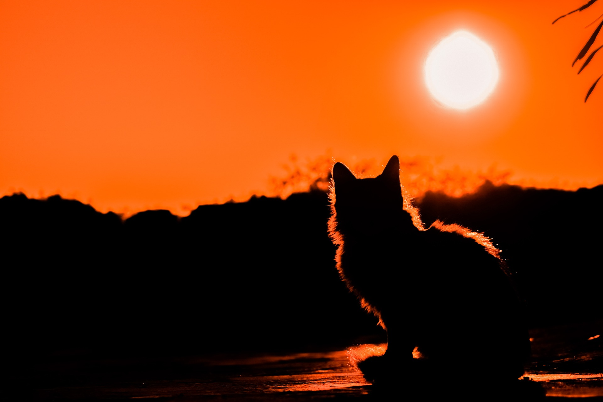

"When I saw Greg throw his talking box into the fruit musher machine, I was reconsidering why the humans think they're so smart. He can say that he hadn't had his coffee, but I'm a cat. I know better than him. Foolish Greg, that's what I call him."
 Image used was created by dimitrisvetsikas1969 on Pixabay. Click this link for more info.Catto's owner, Greg, who is 24 years of age, has rebutted by saying: "Listen, I understand that my cat has some harsh opinions about me. But the fact that he's losing faith in humanity as a whole just for my mistake is going a little out of hand. I didn't even get my coffee yet!" Catto has ignored this rebuttal and has moved forward with his pondering.
"Typical human. You can't fool me, foolish Greg." said Catto while staring off at the sunset.
So, what happens next? Maybe you can tell us!